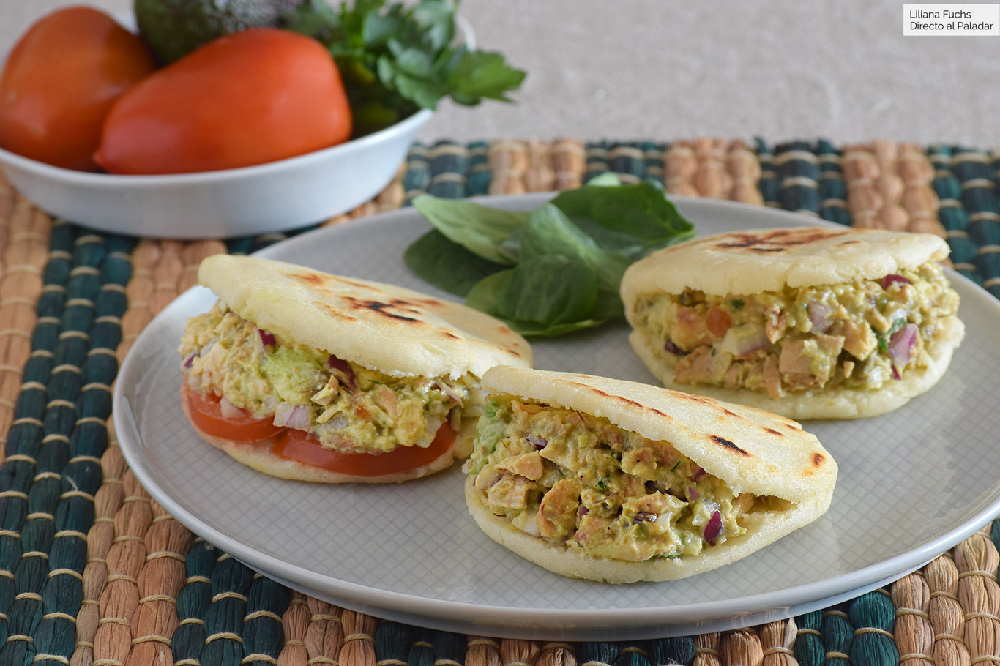

Arepas de Reinapepiada
- INGREDIENTES
- • Harina de maíz precocida blanca 300 g
- • Agua 480 ml
- • Sal 2 g
- • Pechuga de pollo asada1
- • Aguacate maduro1
- • Cebolla morada0.5
- • Diente de ajo1
- • Mayonesa30 ml
- • Zumo de limón o lima
- • Pimienta negra molida
- • Perejil fresco o cilantro (opcional)
- • Tomate (opcional)
PREPARACION:
Para hacer la masa, disponer la harina de maíz precocida en un recipiente y mezclar con la sal. Formar un hueco y echar el agua, mezclando poco a poco. Trabajar la masa con las manos hasta que quede bien hidratada y esté lisa y homogénea. Debe quedar húmeda pero no pegajosa. Corregir de harina o agua si fuera necesario. Tapar y dejar reposar 10 minutos. Preparar una sartén o plancha con un poco de aceite. Dividir la masa en 6-8 porciones, dependiendo del tamaño deseado, procurando que sean más o menos iguales. Formar bolas uniformes con las manos -podemos engrasarlas con aceite ligeramente para que sea más fácil- y aplanar con suavidad. Deben quedar como tortitas, con un dedo de grosor, de unos 1,5 cm. Tampoco tienen que ser perfectas. Calentar la sartén y cocinar las arepas durante unos 8-10 minutos a fuego medio por cada lado, dejando que se doren bien. La única dificultad es que no queden crudas por dentro; podemos terminar de cocinarlas en el horno a 180ºC unos 10 minutos. Para elaborar el relleno, picar o deshilachar el pollo, al gusto. Combinar con la carne del aguacate machacada, el diente de ajo prensado, la cebolla picada y un poco de perejil o cilantro picado. Salpimentar y aderezar con zumo de lima o limón. Añadir mayonesa y mezclar hasta tener la consistencia deseada. Para servir, abrir cada arepa por la mitad -sin separar las dos mitades- usando un buen cuchillo de sierra. Rellenar con la mezcla de ensalada de pollo procurando no romperlas.